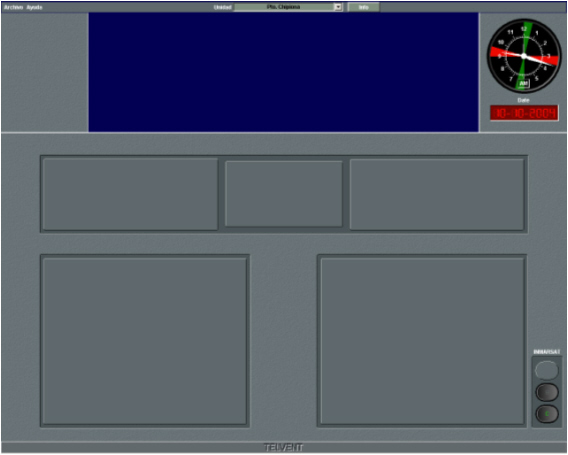

Consola de Instructor
Las consolas de instructor se componen de una Pantalla de Presentación Cartográfica y una Pantalla de Control.
| Pantalla de Presentación Cartográfica | Pantalla de Control |
 |
 |
Sobre la Pantalla de Presentación Cartográfica se muestra de forma continua la situación de las unidades sobre una cartografía digital. También incluye controles para la preparación, ejecución y análisis de ejercicios.
En la Pantalla de Control se incluye un menú para la preparación y transmisión de mensajes Navtex y EGC y para la asignación de daños a unidades.
Cuando el instructor controla una unidad, la Pantalla de Control muestra el mismo aspecto que la Pantalla de Control de la Consola de Alumno.